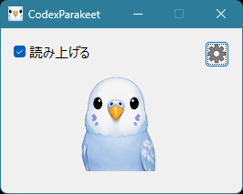
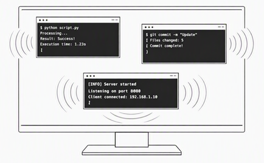
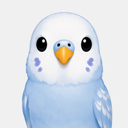
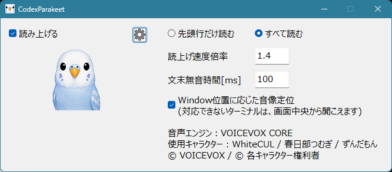

🔊
応答を音声で確認
Codex CLIの通知をきっかけに、生成された応答を自然な合成音声で読み上げるため、Codexの作業完了に素早く対応可能です。3つのターミナルごとに話者を設定し、それぞれの応答を音声で読み上げます。
ターミナルに流れるCodexの応答を、日本語音声でリアルタイムに読み上げる無料のWindowsアプリ。画面を見続けなくても、開発の流れを止めません。

目とキーボードだけに頼らない、Codexとの新しい付き合い方。
Codex CLIの通知をきっかけに、生成された応答を自然な合成音声で読み上げるため、Codexの作業完了に素早く対応可能です。3つのターミナルごとに話者を設定し、それぞれの応答を音声で読み上げます。

ターミナルの位置に合わせて、音の方向を感じられる空間オーディオを採用しています。複数のターミナルから、音声情報を頼りに目的のターミナルを探し出せます。

音声に合わせて、可愛らしいインコのキャラクターが口を動かします。

声・音量・読み上げなどを、迷わず調整できるシンプルな設定画面を用意しています。
CodexParakeetは無料で利用できます。MITライセンスに則り、商用利用にも対応しています。
Windows x64向けのReleaseをダウンロードして、すぐに始められます。
CodexParakeetのRelease版を展開し、CodexParakeetフォルダを作成します。
次に、VOICEVOX CORE 0.16.4 for Windows x64をダウンロードし、展開したVOICEVOX COREフォルダの中身を、CodexParakeetフォルダ内の voicevox_core/ にコピーしてください。
さらに voicevox_core/c_api/lib/voicevox_core.dll を、CodexParakeet.exe と同じトップ階層へコピーします。
CodexParakeet/
├─ CodexParakeet.exe
├─ codex_speak_notify.ps1
├─ lipsync/
├─ voicevox_core/
│ ├─ c_api/
│ │ ├─ include/
│ │ └─ lib/
│ ├─ dict/
│ │ └─ open_jtalk_dic_utf_8-1.11/
│ ├─ models/
│ │ └─ vvms/
│ └─ onnxruntime/
│ └─ lib/
└─ voicevox_core.dll
STEP1で作成した CodexParakeet フォルダ全体を C:\Program Files\CodexParakeet など、PC上の好きな場所へ移動します。
Codex CLIの設定ファイル %USERPROFILE%\.codex\config.toml を開き、ファイルのトップレベルに次を追加します。
notify = ["powershell.exe", "-NoProfile", "-ExecutionPolicy", "Bypass", "-File", "C:\\Program Files\\CodexParakeet\\codex_speak_notify.ps1"]"C:\\Program Files" 部分は、STEP2で実際に配置したパスへ書き換えてください。
また、notify は ファイルのトップレベルで定義する必要があるため、ファイルの先頭付近、[xxx] のようなセクションが始まる前に書いて下さい。
Windows x64向けのReleaseを公開中